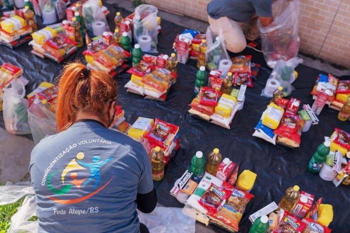
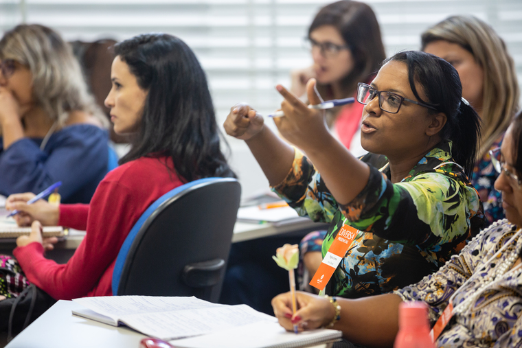
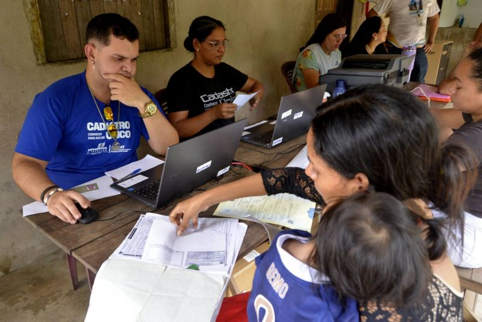

Campanha de Doação de Alimentos
Arrecadamos alimentos e produtos básicos para distribuir a famílias em situação de vulnerabilidade.
Conheça algumas das iniciativas desenvolvidas pelo Instituto Mãos Unidas para ajudar a comunidade.

Arrecadamos alimentos e produtos básicos para distribuir a famílias em situação de vulnerabilidade.

Conectamos voluntários a ações sociais, permitindo que cada pessoa contribua de acordo com suas habilidades e disponibilidade.

Oferecemos oficinas e atividades de capacitação para jovens e adultos, buscando ampliar oportunidades de desenvolvimento profissional.
Você pode contribuir realizando uma doação ou participando como voluntário em nossas ações sociais.
Acesse a página de participação e faça seu cadastro.
Quero participar